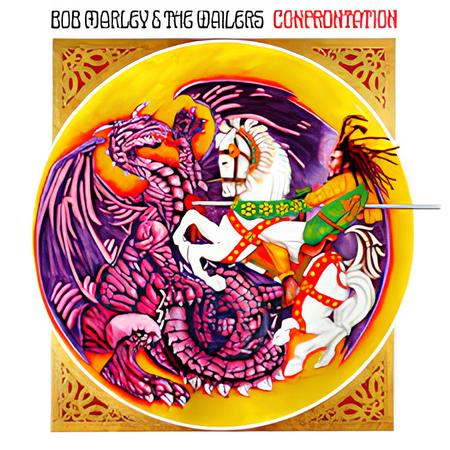
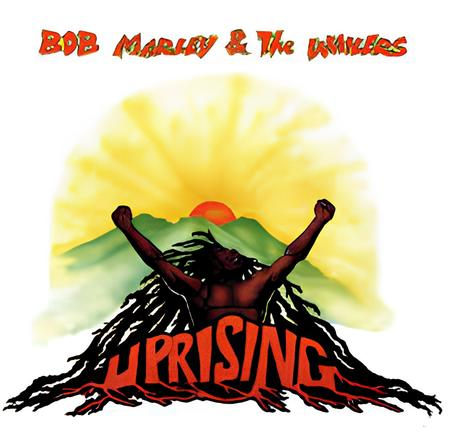
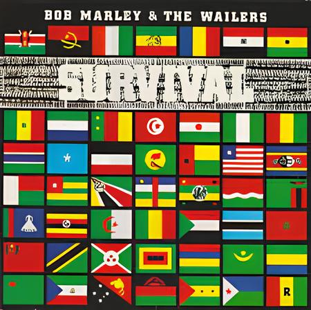
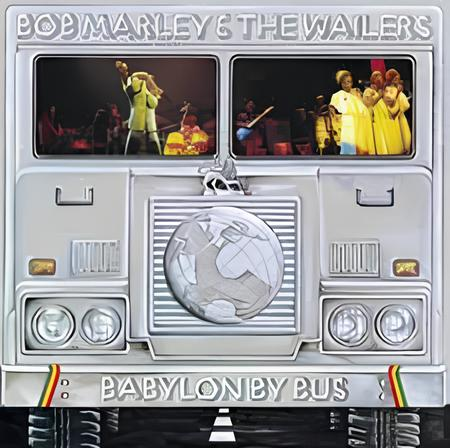
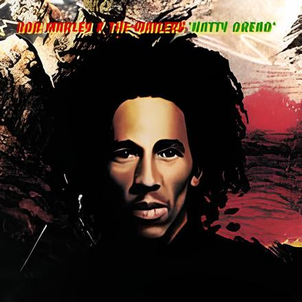
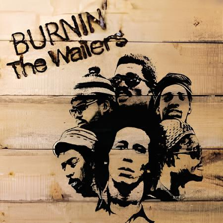
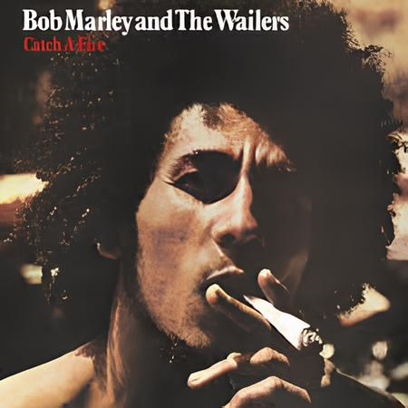

"Confrontation 1983"
"Confrontation" is Bob Marley's tenth studio album & The Wailers, released posthumously after his
death in 1981.
The album features a mix of new songs and previously unreleased recordings.
One of the album's standout songs is "Buffalo Soldier," which has become one of Marley's most
recognizable anthems.
Another notable song is "Chant Down Babylon", which reflects the message of resistance and fight
against oppression that characterized much of Marley's music.
Anecdotes and important things
"Buffalo Soldier": The song "Buffalo Soldier" is one of Bob Marley's last recordings. The title
refers to the African American soldiers who fought in the Indian Wars in the United States, and
Marley uses this metaphor to address the struggle and resistance against oppression.
Message of resistance: "Confrontation" reflects Marley's commitment to themes of social justice,
freedom and unity. Songs like “Chant Down Babylon” and “Rastaman Live Up” express his strong belief
in peaceful resistance and overcoming adversity.
Posthumous legacy: The release of "Confrontation" after Marley's death served to keep his musical
legacy and his message alive. The album received a positive response from critics and fans, further
cementing Marley's influence on music and culture.

"Uprising" (1980):
"Uprising" is the final studio album released by Bob Marley & The Wailers during Marley's lifetime,
before his death in 1981. The album features a blend of reggae, rock, and spiritual themes,
showcasing Marley's musical versatility and lyrical depth. One of the most iconic songs from the
album is "Redemption Song," which is a solo acoustic track with powerful lyrics about freedom and
emancipation. Another notable track is "Could You Be Loved," which became a popular hit and
showcases a more upbeat and danceable side of Marley's music.
Anecdotes and Important Points:
"Redemption Song": This song is often considered one of Bob Marley's most personal and profound
compositions. It's notable that Marley played a solo acoustic guitar on this track, which is a
departure from his usual reggae sound.
Message of Liberation: "Uprising" reflects Marley's continuing commitment to themes of liberation,
justice, and spirituality. Songs like "Redemption Song" and "Coming in from the Cold" carry powerful
messages of self-determination and empowerment.
Musical Diversity: The album showcases a range of musical styles, from roots reggae to rock-infused
tracks like "Zion Train," demonstrating Marley's ability to transcend genres and reach a diverse
audience.
Impact and Legacy: "Uprising" was well-received by both critics and fans, and it further solidified
Bob Marley's status as a global icon of reggae music and a voice for social change.
"Uprising" remains a significant and influential album in Bob Marley's discography, representing his
enduring legacy as a musician and a visionary.

"Survival" (1979):
"Survival" is the eleventh studio album by Bob Marley & The Wailers, released in 1979.
The One of the standout tracks from the album is "Africa Unite," which calls for unity among African
nations and people worldwide. Another notable song is "Zimbabwe," which celebrates the independence
of Zimbabwe and expresses hope for a better future for the country.
Anecdotes and Important Points:
Political Commentary: "Survival" is often regarded as one of Bob Marley's most politically conscious
albums. Songs like "Ambush in the Night" and "Babylon System" criticize political oppression and
injustice.
Pan-Africanism: The album's title track, "Survival," reflects Marley's advocacy for Pan-African
unity and solidarity against colonialism and discrimination.
Zimbabwe's Independence: "Zimbabwe" celebrates the independence of Zimbabwe from colonial rule, and
Marley's performance of this song at the country's Independence Day celebrations in 1980 is a
memorable moment in his career.
Impact and Legacy: "Survival" received positive reviews for its powerful lyrics and musical quality.
It continues to be praised for its social commentary and Marley's ability to blend reggae rhythms
with profound messages.
"Survival" stands as a testament to Bob Marley's commitment to using music as a tool for social
change and empowerment, making it a significant album in reggae history.

"Babylon by Bus" (1978):
"Babylon by Bus" is a live album by Bob Marley & The Wailers, released in 1978. It features
recordings from their 1978 world tour. One of the standout tracks from the album is "Jamming," which
became a live favorite and exemplifies the band's ability to create infectious grooves on stage.
Another notable song is "Exodus," which takes on new life in the live setting with extended
instrumental sections and audience participation.
Anecdotes and Important Points:
Live Energy: "Babylon by Bus" demonstrates the raw energy and passion of Bob Marley & The Wailers'
live shows, with dynamic performances and audience interaction.
Global Impact: The album's recordings span concerts from Europe, North America, and Africa,
highlighting Marley's worldwide appeal and influence.
Musical Variation:In addition
Live Favorites: Songs like "No Woman, No Cry" and "Stir It Up" are presented in new arrangements and
extended versions, making them standout tracks on the live album.
"Babylon by Bus" is a testament to Bob Marley's prowess as a live performer and his ability to
connect with audiences around the globe through his music.

"Kaya" (1978):
"Kaya" is the tenth studio album by Bob Marley & The Wailers, released in 1978.
The album is known for its laid-back, mellow reggae sound that reflects themes of love, unity, and
spirituality.
One of the standout tracks from the album is "Is This Love," a romantic ballad that showcases
Marley's soulful vocals and became a major hit.
Another notable song is the title track "Kaya," which celebrates the Rastafarian practice of using
ganja (marijuana) for spiritual purposes.
Anecdotes and Important Points:
Relaxed Vibes: The overall tone of "Kaya" is relaxed and uplifting, with songs like "Sun Is Shining"
and "Satisfy My Soul" spreading positive vibes and joy.
Cultural Impact: While initially receiving mixed reviews, "Kaya" has since become a fan favorite and
is considered a classic in Bob Marley's discography. Its enduring popularity highlights Marley's
ability to connect with audiences through his music.
Diverse Themes: Alongside love and spirituality, "Kaya" also addresses social issues. The song
"Crisis" touches on political turmoil, showcasing Marley's depth as a songwriter.

"Exodus" (1977):
"Exodus" is the ninth studio album by Bob Marley & The Wailers, released in 1977.
The album is widely regarded as one of Marley's greatest works and a landmark in reggae music
history.
One of the standout tracks from the album is "Jamming," a lively and infectious song that became a
fan favorite and a symbol of unity and joy.
Another iconic song from "Exodus" is "Three Little Birds," which carries a message of reassurance
and positivity, becoming one of Marley's most recognizable tunes.
Anecdotes and Important Points:
Influence of "Exodus": The album's title track, "Exodus," is considered one of Marley's signature
songs and has been hailed as an anthem for the struggle for freedom and liberation.
Recording in Exile: Much of "Exodus" was recorded while Marley was in exile in London due to
political tensions in Jamaica. Despite this, the album reflects a sense of hope and resilience.
Musical Diversity: "Exodus" showcases a range of musical styles, from roots reggae to elements of
funk and rock, highlighting Marley's versatility as a musician.
Social and Political Themes: Songs like "One Love/People Get Ready" and "Guiltiness" address themes
of love, unity, social justice, and resistance against oppression.
"Exodus" is not only a musical masterpiece but also a cultural touchstone, reflecting Bob Marley's
commitment to using music as a tool for social change and spreading messages of love and unity.

"Rastaman Vibration" (1976):
The album is known for its strong Rastafarian themes, addressing spirituality, social issues, and
cultural identity.
One of the standout tracks is "War," featuring lyrics adapted from a speech by Haile Selassie I,
condemning oppression and advocating for justice.
Another iconic song from the album is "Roots, Rock, Reggae," which celebrates the power of reggae
music as a vehicle for social change and cultural expression.
Anecdotes and Important Points:
Haile Selassie Influence: The album includes references to Haile Selassie I, the Ethiopian emperor
considered a divine figure in Rastafarianism. Marley's admiration for Selassie's teachings and
leadership is evident throughout the album.
Social Commentary: "Rastaman Vibration" addresses various social issues, including political
corruption ("Johnny Was") and the struggles faced by the underprivileged ("Cry to Me").
Cultural Identity: The title and themes of the album reflect Marley's strong identification with
Rastafarian culture and his desire to promote awareness and understanding of Rastafarian beliefs and
values.
Musical Fusion: The album blends elements of reggae, rock, and soul, showcasing Marley's versatility
as a musician and his ability to appeal to diverse audiences.
"Rastaman Vibration" is considered a seminal work in reggae music, showcasing Bob Marley's lyrical
depth, musical innovation, and commitment to using his platform for social and cultural advocacy.

"Live" (1975):
"Live" is a live album by Bob Marley & The Wailers, capturing the essence of their electrifying
performances and the infectious energy of reggae music in a concert setting.
Here are some key points and anecdotes about this iconic album:
Energetic Performances: "Live" showcases the high-energy and captivating performances of Bob Marley
& The Wailers on stage. The album captures the band's dynamic presence and the enthusiasm of the
audience, creating an immersive listening experience.
Iconic Tracks: The album features live renditions of some of Bob Marley's most iconic songs,
including "No Woman, No Cry," "Stir It Up," "Get Up, Stand Up," and "I Shot the Sheriff." These
tracks are not only musical classics but also represent Marley's messages of love, unity, and social
consciousness.
Audience Interaction: One of the highlights of live recordings is the interaction between the band
and the audience. "Live" includes moments of crowd participation, sing-alongs, and the palpable
connection between Marley and his fans, making listeners feel like they're part of the concert
experience.
Musical Diversity: The album showcases The Wailers' musical versatility, blending reggae with
elements of funk, rock, and soul. Extended instrumental sections, rhythmic variations, and
improvised jams add depth and excitement to the songs, highlighting the band's improvisational
skills.
Legacy: "Live" is a testament to Bob Marley's enduring legacy as a musical legend. The album
continues to inspire generations of listeners, keeping Marley's spirit and music alive for years to
come.

"Natty Dread" (1974):
"Natty Dread" is the third studio album by Bob Marley & The Wailers, released in 1974.
Here's a summary with some anecdotes and important points about this album:
Transition to Solo Career: "Natty Dread" marked Bob Marley's transition from The Wailers to a solo
career, although the band's name continued to be used for marketing purposes.
Influential Tracks: The album features several influential tracks, including "Lively Up Yourself,"
"No Woman, No Cry," "Them Belly Full (But We Hungry)," and "Revolution."
"No Woman, No Cry" Anecdote: The live version of "No Woman, No Cry" from the "Natty Dread" album
became one of Marley's most famous songs. Recorded at the Lyceum Theatre in London, the performance
captured the spirit of Marley's concerts and is considered a reggae classic.
Social and Political Commentary: "Natty Dread" addresses social and political issues, with songs
like "Revolution" reflecting Marley's commitment to advocating for change and justice.
Musical Style: The album blends reggae with elements of rock and soul, showcasing Marley's
versatility as a musician and his ability to appeal to diverse audiences.
Legacy: "Natty Dread" is regarded as one of Bob Marley's seminal albums, solidifying his status as a
global reggae icon and influencing generations of musicians with its powerful messages and
infectious rhythms.
Overall, "Natty Dread" is a pivotal album in Bob Marley's discography, capturing the essence of his
music, his cultural identity, and his impact on the world of reggae and beyond.

"Burnin" (1973):
"Burnin'" is the second studio album by Bob Marley & The Wailers, released in 1973.
Here's a summary with some anecdotes and important points about this album:
Breakthrough Album: "Burnin'" marked a significant breakthrough for Bob Marley & The Wailers,
helping to establish their international reputation as reggae pioneers.
Influential Tracks: The album features several influential tracks, including "Get Up, Stand Up," "I
Shot the Sheriff," "Burnin' and Lootin'," and "Small Axe."
"Get Up, Stand Up" Anecdote: "Get Up, Stand Up" became one of Bob Marley's most iconic songs and a
rallying cry for social justice. Co-written with Peter Tosh, the song's powerful message of standing
up against oppression resonated with audiences worldwide.
"I Shot the Sheriff" Success: The song "I Shot the Sheriff" gained international acclaim and was
later famously covered by Eric Clapton, introducing Bob Marley's music to a broader audience.
Social and Political Commentary: "Burnin'" addresses various social and political issues, reflecting
Marley's commitment to using music as a tool for activism and change.
Musical Style: The album blends traditional reggae rhythms with elements of rock and soul,
showcasing The Wailers' musical versatility and innovation.
Impact: "Burnin'" contributed significantly to the popularity of reggae music on the global stage,
paving the way for Bob Marley's future success and cementing his status as a musical legend.

"Catch a Fire" (1973):
"Catch a Fire" is the fifth studio album by Bob Marley & The Wailers, released in 1973.
Here's a summary with some anecdotes and important points about this album:
International Breakthrough: "Catch a Fire" was the first album by Bob Marley & The Wailers to
receive international distribution, marking a significant step in their global recognition.
Innovative Production: The album was produced by Chris Blackwell of Island Records and featured a
more polished sound compared to earlier recordings, incorporating elements of rock and funk
alongside reggae.
Iconic Tracks: "Catch a Fire" includes classic tracks such as "Concrete Jungle," "Stir It Up,"
"Slave Driver," and "Kinky Reggae," which became staples of Marley's repertoire.
Album Cover Anecdote: The original album cover for "Catch a Fire" featured a unique design
resembling a Zippo lighter, complete with a flip-top lid. This innovative packaging contributed to
the album's visual appeal and made it stand out on record store shelves.
Musical Evolution: "Catch a Fire" showcased The Wailers' musical evolution, blending traditional
reggae rhythms with elements of soul, funk, and rock. The album's diverse sound appealed to a
broader audience and helped introduce reggae to new listeners.
Lyrically Profound: The songs on "Catch a Fire" explored themes of social justice, oppression, love,
and spirituality, reflecting Bob Marley's commitment to using music as a vehicle for positive
change.
Impact: "Catch a Fire" was a critical and commercial success, earning praise for its innovative
sound and powerful lyrics. It laid the groundwork for Bob Marley & The Wailers' future success and
solidified their status as icons of reggae music.